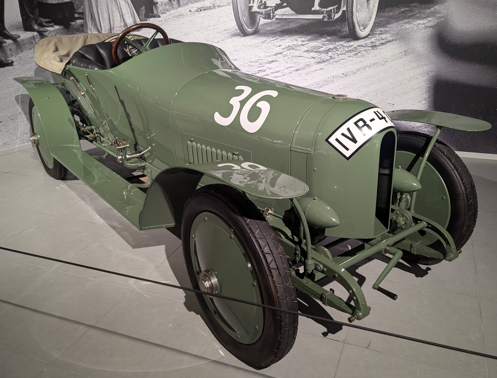
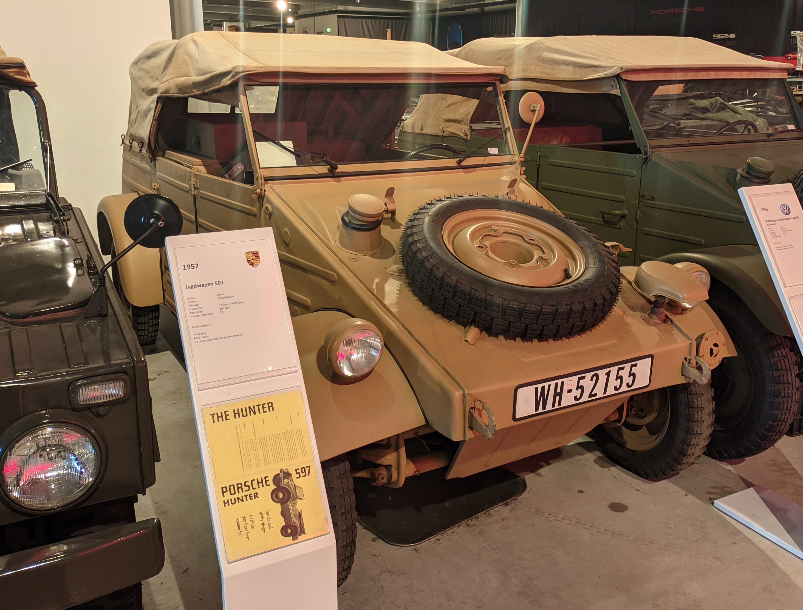
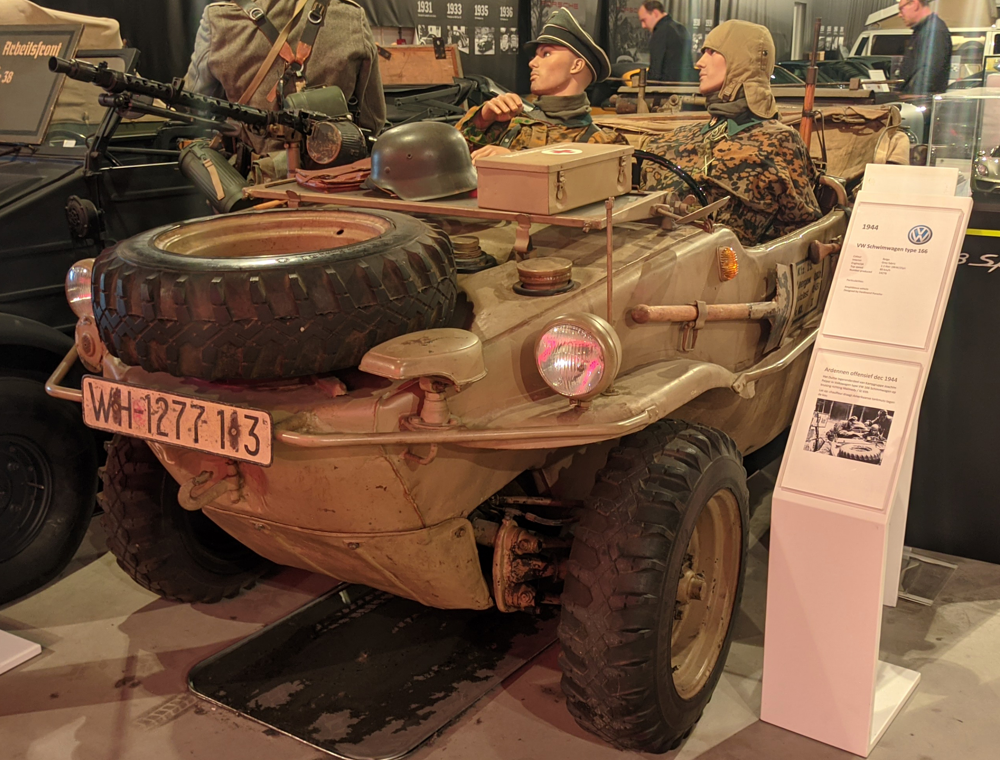

License Plates of
Germany (DE)
Photographed in The Netherlands


Oldtimer series. GEL = Cleves District (Geldern). H = Historisch (Historic).


Seasonal series. D = Düsseldorf City. 06/12 = Only allowed to be driven June to December.


Seasonal series. AC = Aachen Urban District. 04/09 = Only allowed to be driven April to September.


Seasonal series. DH = Diepholz District. 03/10 = Only allowed to be driven March to October.


Seasonal series. CLP = Cloppenburg District. 03/11 = Only allowed to be driven March to November.


Seasonal series. CAS = Recklinghausen District (Castrop-Rauxel). 04/10 = Only allowed to be driven April to October.


Seasonal series. NOH = County of Bentheim. 03/10 = Only allowed to be driven March to October.


Seasonal oldtimer series. MI = Minden-Lübbecke District. H = Historisch (Historic). 03/10 = Only allowed to be driven March to October.


Tax-Exempt series. DO =Dortmund City. Green text = Tax-Exempt vehicle.


Tax-Exempt series. EMS = Rhine-Lahn District. Green text = Tax-Exempt vehicle.


Export series. D = Düsseldorf City. Valid until March(04) 6th(06) 2024(24).


Export series. AB = Aschaffenburg City, Aschaffenburg District. Valid until October(10) 7th(07) 2023(23).


Export series. ME = Mettmann District. Valid until December(12) 14th(14) 2024(24).


Export series. EBE = Ebersberg District Valid until February(2) 17th(17) 2024(24).


Provisional series. H = Hanover Region. First numerals always 04 or 03. Valid until November(11) 26th(26) 2024(24).


Provisional series. DA = Darmstadt City, Darmstadt-Dieburg District. First numerals always 04 or 03. Valid until August(08) 6th(06) 2024(24).


Trade plate series. GI = Giessen District. 06 = Dealer.


Diplomatic series. O = Diplomatic Corps. 97 = Netherlands.


Diplomatic series. O = Diplomatic Corps. 315 = Joint United Nations Programme on HIV/AIDS.


Semi-iplomatic series. BN = Bonn. 172 = European Aviation Safety Agency.


Electric diplomatic series. O = Diplomatic Corps. 315 = Joint United Nations Programme on HIV/AIDS. E = Electric/Hybrid Vehicle.


Normal series. 1956-2000 plate style. S = Stuttgart City.


Normal series. 1956-2000 plate style. K = Cologne City.


Normal series. 1956-2000 plate style. BB = Böblingen District.


Normal series. 1956-2000 plate style. DN = Düren District.


Normal series. 1956-2000 plate style. TBB = Main-Tauber District.


Tax free series. 1956-2000 plate style. LB = Ludwigsburg District.


Moped series. 2024 plate. Annual plates changing between black, blue and green. Blocks of serials are issued by different insurance companies.

Normal Series from 1906 to 1945. Baden.

Normal series from 1906-45. WH = Wehrmacht Heer (Army). It is unlikely these are genuine plates.

Normal series from 1906-45. WH = Wehrmacht Heer (Army). It is unlikely these are genuine plates.